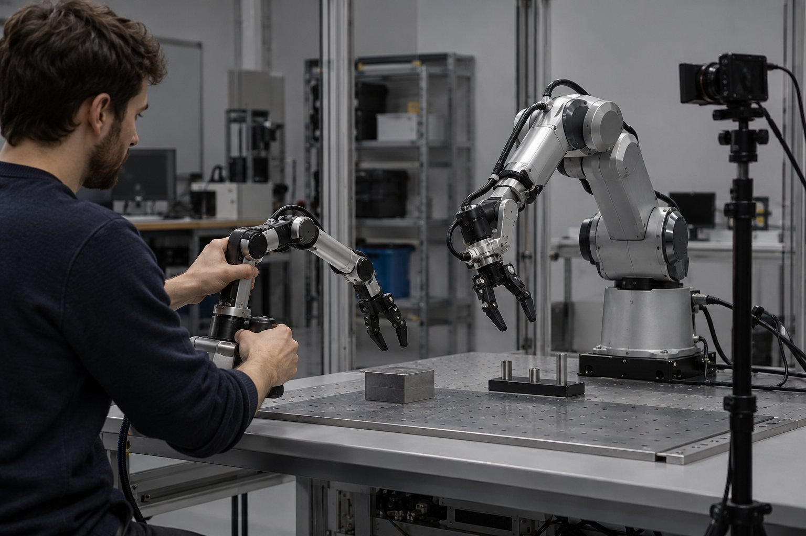
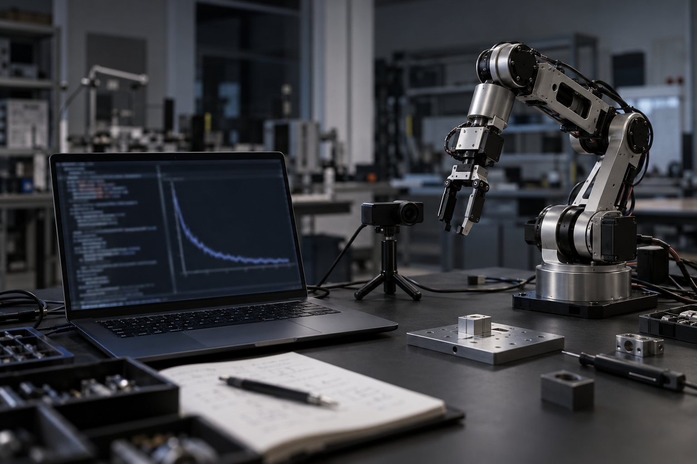

Curso · 8 aulas · robótica com IA
VLA: robôs que veem, entendem e agem
Como um modelo olha uma câmera, lê uma frase e devolve movimentos de braço. Em oito aulas você entende a arquitetura, escolhe um modelo pela licença, abre dados reais de robô, treina e avalia uma política com o LeRobot e monta o checklist para levar ao mundo real. Não precisa ter robô.

- 8aulas
- 130minutos de aula
- 23exercícios com "pronto quando"
- 0.6.1versão do LeRobot testada (19/10/2026)
As aulas
Do conceito à bancada: o que é um VLA, como ele funciona por dentro, quais modelos existem em out/2026, dados, treino, simulação, a fronteira da pesquisa e o caminho até o mundo real.
 Aula 1 · 14 minDe LLM a robô que ageUm chatbot devolve texto. Um robô precisa devolver movimento, dezenas de vezes por segundo, olhando uma câmera. Esta aula separa as quatro famílias de modelo que você vai ouvir no curso e mostra o que mudou entre 2023 e outubro de 2026.
Aula 1 · 14 minDe LLM a robô que ageUm chatbot devolve texto. Um robô precisa devolver movimento, dezenas de vezes por segundo, olhando uma câmera. Esta aula separa as quatro famílias de modelo que você vai ouvir no curso e mostra o que mudou entre 2023 e outubro de 2026. Aula 2 · 16 minOlho, cérebro e mão: por dentro de um VLATodo VLA tem três partes: uma que vê, uma que entende e uma que transforma a decisão em movimento. A parte do movimento é onde os modelos mais diferem, e onde o relógio aperta: o braço espera comando a cada poucos milissegundos.
Aula 2 · 16 minOlho, cérebro e mão: por dentro de um VLATodo VLA tem três partes: uma que vê, uma que entende e uma que transforma a decisão em movimento. A parte do movimento é onde os modelos mais diferem, e onde o relógio aperta: o braço espera comando a cada poucos milissegundos. Aula 3 · 16 minO mapa dos modelos em 2026Há dezenas de VLAs e o melhor no gráfico pode ser o que você não pode usar. Antes do tamanho e do número de benchmark, três perguntas decidem: os pesos são baixáveis, a licença deixa usar no seu caso e o acesso é livre, pago ou só para parceiros.
Aula 3 · 16 minO mapa dos modelos em 2026Há dezenas de VLAs e o melhor no gráfico pode ser o que você não pode usar. Antes do tamanho e do número de benchmark, três perguntas decidem: os pesos são baixáveis, a licença deixa usar no seu caso e o acesso é livre, pago ou só para parceiros.
Aula 4 · 16 minDados: o combustível que faltaTexto para treinar LLM existe aos montes na internet. Dados de robô, não: alguém precisa mover o braço, gravar a câmera e anotar a tarefa. Em 2026 a resposta virou vídeo de gente trabalhando, filmado em primeira pessoa. Nesta aula você abre um dataset de robô de verdade.
Aula 5 · 18 minMão na massa com LeRobot 0.6O LeRobot, da Hugging Face, junta num lugar só os dados, as políticas e os comandos para gravar, treinar e rodar. Nesta aula você treina uma política ACT de verdade, por poucos passos, e sai com um checkpoint no disco. Sem robô e sem conta. Aula 6 · 16 minSimular antes de quebrar: sim, avaliação e sim-to-realTestar no robô real custa tempo, peça e paciência. O simulador deixa errar mil vezes de graça e dá um número: a taxa de sucesso. Mas o número só vale se o teste for difícil o bastante e se o mundo simulado se parecer com o real.
Aula 6 · 16 minSimular antes de quebrar: sim, avaliação e sim-to-realTestar no robô real custa tempo, peça e paciência. O simulador deixa errar mil vezes de graça e dá um número: a taxa de sucesso. Mas o número só vale se o teste for difícil o bastante e se o mundo simulado se parecer com o real. Aula 7 · 16 minAlém da imitação: RL, world models e memóriaImitar tem um teto: a política só aprende o que a pessoa mostrou e não sabe sair de um erro que nunca viu. Em 2026 três ideias empurram esse teto: aprender com a própria experiência (RL), prever o futuro em vídeo (World Action Models) e lembrar do que já fez (memória).
Aula 7 · 16 minAlém da imitação: RL, world models e memóriaImitar tem um teto: a política só aprende o que a pessoa mostrou e não sabe sair de um erro que nunca viu. Em 2026 três ideias empurram esse teto: aprender com a própria experiência (RL), prever o futuro em vídeo (World Action Models) e lembrar do que já fez (memória). Aula 8 · 18 minDo laboratório ao mundo realUma política que acerta no simulador ainda está longe de uma linha de produção. No meio do caminho estão o ROS 2, que liga o modelo aos motores, as camadas de segurança, que nenhum VLA dispensa, e o estado real do mercado, que é menos pronto do que as manchetes fazem parecer.
Aula 8 · 18 minDo laboratório ao mundo realUma política que acerta no simulador ainda está longe de uma linha de produção. No meio do caminho estão o ROS 2, que liga o modelo aos motores, as camadas de segurança, que nenhum VLA dispensa, e o estado real do mercado, que é menos pronto do que as manchetes fazem parecer.
Para quem é
- 1Quem programa um pouco em Python e quer entender robótica com IA sem decorar siglas.
- 2Quem não tem robô: as práticas rodam com dados do Hugging Face Hub e em simulação. O braço SO-101 é opcional.
- 3Quem precisa decidir se um modelo serve para um caso real e quer olhar licença, acesso e segurança antes.
O que você sai fazendo
- 1Dizer se um sistema é LLM, VLM, VLA ou World Action Model e por quê.
- 2Escolher um modelo pela licença, pelo tamanho e pelo tipo de acesso.
- 3Abrir um dataset de robô, treinar uma política curta e medir a taxa de sucesso dela em simulação.
- 4Montar o checklist de segurança e o seu plano de estudo com datas.